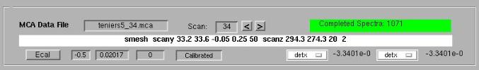
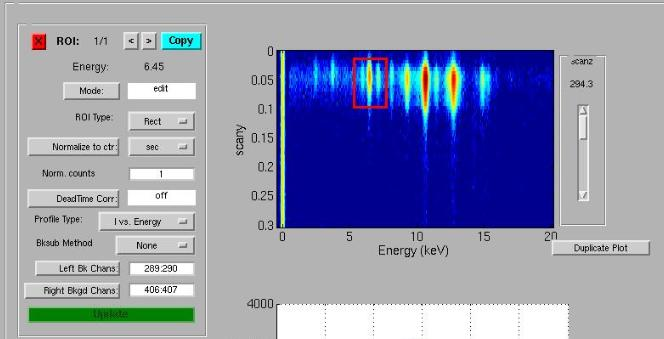
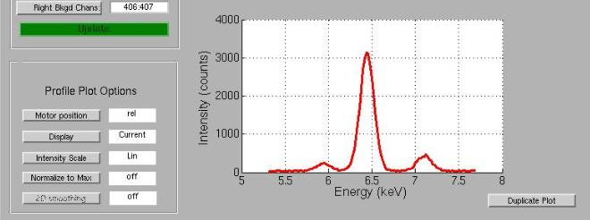
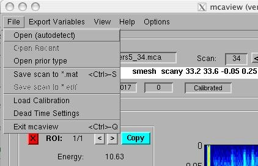
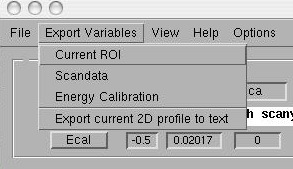
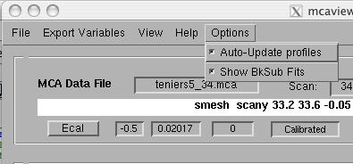

OVERVIEW: mcaview is a graphical user interface for examining confocal x-ray fluorescence microscopy data at CHESS. These data consist of one or more spectrum, i.e. a histogram representing photon counts as a function of energy. It is particularly geared towards two- and three-dimensional data sets, and is designed to allow the most common qualitative analysis tasks (depth profiles, virtual cross-sections) to be performed quickly and simply. Mcaview is designed to load data taken in conjunction with SPEC, the principal control & data acquisition software at CHESS.
Mcaview is divided into three sections: Most buttons and input boxes have tooltip strings that can be accessed by hovering the mouse over the button or box.
1. The top section displays information about the current data file and scan, e.g. the filename and scan number. New scans can be loaded by editing the filename (in the case of separate mca data files), the scan number, or by clicking the left & right arrow buttons to advance to the next or previous scan. The current scan is displayed, along with the number of spectra loaded, the current energy calibration, the number of completed spectra, and the positions of two user-selectable motors.

2. The middle section consists of the ROI manager (left) and raw data pane (right). The data are displayed as an image, with channel number, or energy, along the x-axis, and the first scanning-motor position along the y axis (in this case, "scany"). Color indicates the log of the intensity, with red coresponding to the maximum. For multiple-motor scans, (such as the one shown above), a slider-bar appears to the right of this pane to navigate to different scanz positions.
Dragging a rectangular area, (Region Of Interest) on the image pane at the right causes mcaview to generate a projected view of the data within the ROI. The type of projection (Intensity vs. Energy, vs. the fast-scaning motor, or a 2D map), depends on the 'Profile Type' setting at the left.

3. The lower section displays one or more projections (profiles) from ROIs generated using the middle-two panels. Display options are shown in the lower-left panel.

File menu:

Export menu:

Options menu:

FILE TYPES: Whenever a raw data file is opened, the MCA data and SPEC data (counters, motor positions, etc.) are loaded into a single data structure (scandata). By default, this variable is saved to a binary file (extension .mat) with the same base filename as the MCA file. Subsequently, this file can be loaded instead of the raw file, which is much faster. If a raw data file is loaded more than once, the user is prompted whether or not to overwrite the existing binary file. Among the parameters saved in the binary file are the energy calibration parameters. If you change these parameters and want these changes reflected in the binary file, use File->Save scan to *.mat.
PROFILE PLOT OPTIONS: If 'Display' is toggled from 'Current' to 'All', then multiple (linear) profiles are displayed simultaneously. (This has no effect for 2D images). The intensity scale may be toggled from linear to logarithmic. If 'Normalize to Max' is 'on', then all displayed profiles will be normalized to their maximum value. This is useful when the user wants to compare elements or peaks that have very different intensities. 2D smoothing 'on' turns on interpolation for 2D images. 'Motor position' may be set to 'abs' or 'rel', and is especially useful when the fast-scan range can change during a scan.
ENERGY CALIBRATION: Generating a new energy calibration isn't easy at the moment. But, if you know the values for the offset and slope for your data, you can enter them in the upper panel. These will be applied to all the following data loaded in the session. Here are rough energy calibrations for some of the most common recent configurations (as of March 2006):
| Detector | Offset (keV) | Slope (keV /channel) |
| xflash (CHESS common) | -0.5 | 0.02 |
| vortex (1 microsecond shaping time) | 0 | 0.01 |
| vortex (2 microsecond shaping time) | 0 | 0.0091 |
EXPORT VARIABLES: When
mcaview is run from within matlab, you have the option of sending
certain of mcaview's internal variables to the main matlab workspace
for scrutiny. As mentioned above, the variable 'scandata' is a
structure containing all of the MCA and SPEC data for a
particular scan. For example, scandata.mcadata holds all of the
MCA data, reshaped to match the scan dimensions. 'profiles'
contains the profile or profiles plotted in the lower panel of
mcaview.
DATA FORMATS:
mcaview, by design, requires information (e.g. scan dimensions)
about the SPEC scan that generated the MCA data. There are
variety of ways that the MCA and SPEC data files are related. In
addition, mcaview must know things like the number of MCA
channels stored, and the appropriate dead-time correction
method.
{kind=link}